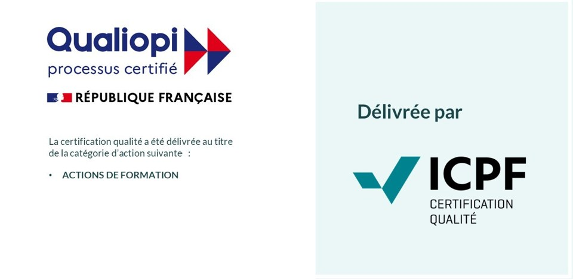

WAVECOORD conçoit et coordonne les plans de fréquences des micros HF, ears et liaisons sans fil pour le spectacle vivant, l'événementiel et le sport — des studios aux plus grands sites.
Discuter de votre projet →Plans de fréquences, études de couverture de zones étendues, suivi en temps réel et gestion du spectre sur site, en lien avec l'ANFR.
Organisme de formation certifié Qualiopi. Stages pour techniciens du spectacle, financements Afdas, sur mesure pour vos équipes.
Outils professionnels de calcul et de coordination de fréquences, développés par WAVECOORD pour fiabiliser vos déploiements.
Fondée par Gregory Maloche, technicien HF et coordinateur de fréquences fort de vingt ans de tournées et de grands événements, WAVECOORD met la rigueur du terrain au service des productions les plus exigeantes.
Festivals, grandes émissions de télévision, rencontres sportives : nous intervenons là où la fiabilité des liaisons sans fil ne souffre aucune approximation.
WAVECOORD est déclaré organisme de formation et certifié Qualiopi. Nos stages s'adressent aux techniciens et intermittents du spectacle souhaitant maîtriser la coordination de fréquences, du cadre réglementaire à la pratique sur site. Prise en charge Afdas possible.
Micro HF & in-ear monitor
Coordination de fréquences & analyse du spectre
Inscription après un entretien téléphonique préalable (besoins, prérequis, positionnement). Pour un financement Afdas, la demande doit être déposée au moins 4 semaines avant le début du stage. Formations dispensées sur le site du client ou dans une salle adaptée mise à disposition ; le lieu est précisé sur la convention et la convocation.
Intermittents du spectacle : prise en charge possible par l'Afdas, demande à déposer par le stagiaire sur son espace MyA. Entreprises : plan de développement des compétences, via votre OPCO. Nous vous accompagnons dans les démarches.
Nos formations sont ouvertes aux personnes en situation de handicap. Contactez notre référent handicap, Gregory Maloche (greg.maloche@wavecoord.com, 06 07 83 44 59), pour étudier ensemble les adaptations nécessaires. Charte d'accessibilité (PDF)
Nos premières sessions sont programmées en février 2027. Les taux de satisfaction et de réussite seront publiés ici à l'issue de chaque session.

La certification qualité a été délivrée au titre de la catégorie d'action suivante : actions de formation. Certificat n° QUA010163 délivré par ICPF, valable du 11/09/2026 au 10/09/2029.
Une étude de couverture, un plan de fréquences, une formation pour vos équipes ? Écrivez-nous.